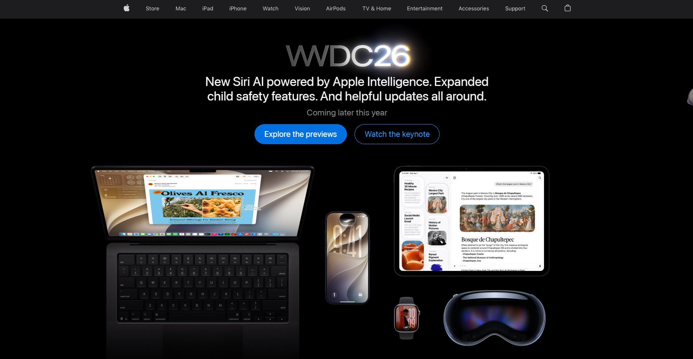
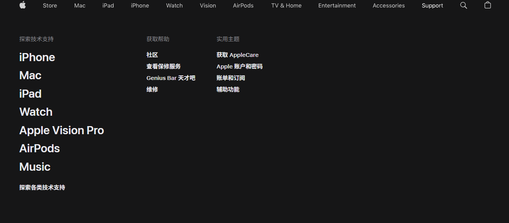
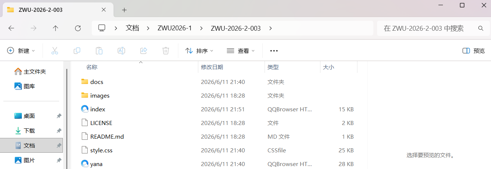
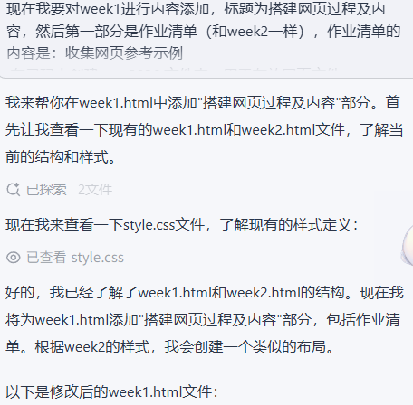
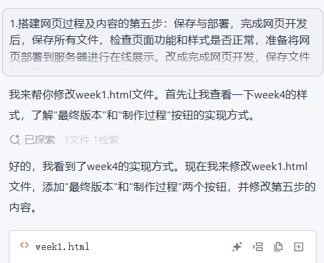
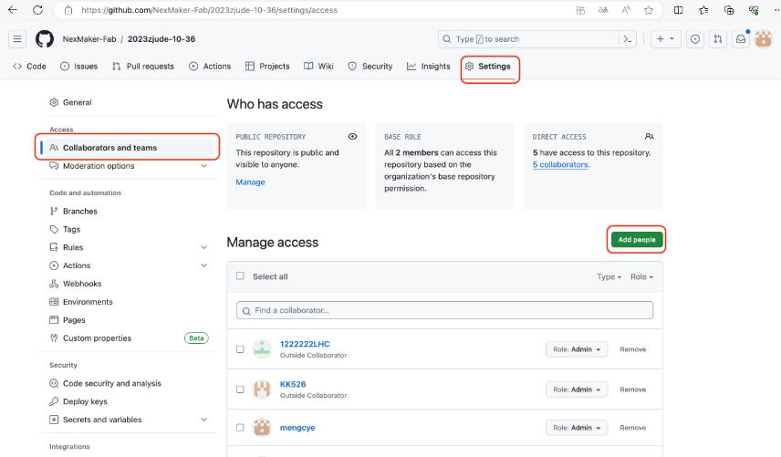
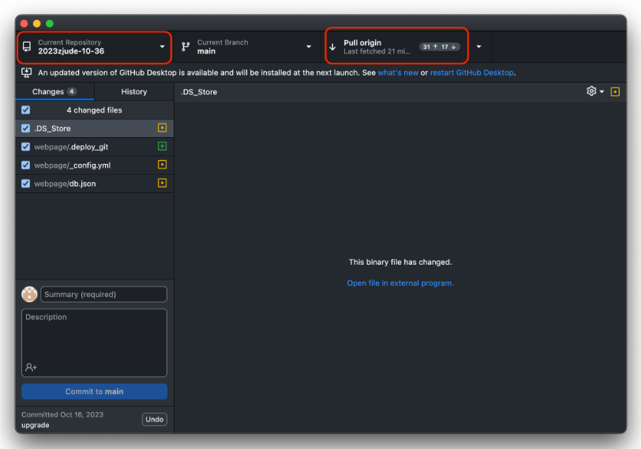
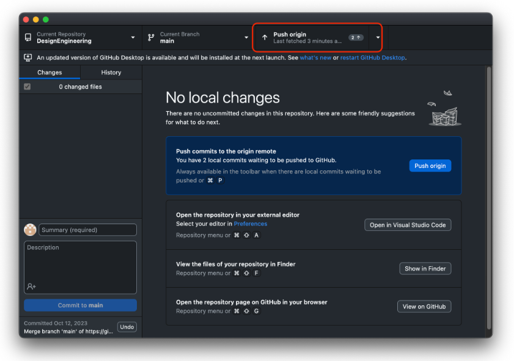

网页搭建
✅ 作业清单
- 收集网页参考示例
- 在灵码中创建 zwu2026 文件夹，用于存放网页文件
- 设计网页基本结构（导航栏、主页、子页面等）
- 使用灵码 AI 指令生成网页代码及调整网页样式和功能
- 完成网页开发，保存文件并检查功能与样式，创建 GitHub 仓库以便团队协作上传
🌐 搭建网页过程及内容
📌 第一步：收集网页参考示例
浏览优秀的网页设计案例，分析其布局、配色、交互等设计元素，为后续网页制作提供参考灵感。
Apple 官网分析：布局简洁，配色清爽，交互流畅，突出产品展示与用户体验。

图1：Apple 官网首页展示

图2：Apple 官网技术支持页面
📁 第二步：创建项目文件夹
在灵码中创建 zwu2026 文件夹，建立清晰的目录结构，用于存放HTML、CSS、JavaScript及图片等资源文件。

图3：项目文件夹结构
🏗️ 第三步：设计网页基本结构
规划网页的整体架构，包括顶部导航栏、主页内容区域、各个子页面（如作业页、项目页、团队介绍页等），确保页面之间能够顺畅跳转。

图4：网页整体布局设计

图5：页面组件设计规范
💻 第四步：使用灵码 AI 生成代码
利用灵码 AI 助手编写网页代码，通过自然语言指令快速生成HTML结构、CSS样式和JavaScript交互功能，并根据需求进行调整和优化。
部分展示过程：

图6：使用灵码 AI 生成代码过程

图7：AI 辅助调整网页样式
🚀 第五步：保存与部署
完成网页开发，保存文件并检查功能与样式，创建 GitHub 仓库以便团队协作上传。
将团队成员添加到仓库中，以便协同进行项目管理。

图8：添加团队成员到 GitHub 仓库
安装完成后，登录 GitHub 账号，并拉取对应的仓库。

图9：使用 GitHub Desktop 拉取仓库
在 VS Code 中编辑仓库文件，保存修改后将更新内容推送回仓库。

图10：在 VS Code 中编辑并推送到 GitHub
🔨 制作过程记录
第一步：收集网页参考示例
浏览优秀的网页设计案例，分析其布局、配色、交互等设计元素，为后续网页制作提供参考灵感。
Apple 官网分析：布局简洁，配色清爽，交互流畅，突出产品展示与用户体验。
图1：Apple 官网首页展示
图2：Apple 官网技术支持页面
📁 第二步：创建项目文件夹
在灵码中创建 zwu2026 文件夹，建立清晰的目录结构，用于存放HTML、CSS、JavaScript及图片等资源文件。
图3：项目文件夹结构
🏗️ 第三步：设计网页基本结构
规划网页的整体架构，包括顶部导航栏、主页内容区域、各个子页面（如作业页、项目页、团队介绍页等），确保页面之间能够顺畅跳转。
图4：网页整体布局设计
图5：页面组件设计规范
💻 第四步：使用灵码 AI 生成代码
利用灵码 AI 助手编写网页代码，通过自然语言指令快速生成HTML结构、CSS样式和JavaScript交互功能，并根据需求进行调整和优化。
部分展示过程：
图6：使用灵码 AI 生成代码过程
图7：AI 辅助调整网页样式
🚀 第五步：保存与部署
完成网页开发，保存文件并检查功能与样式，创建 GitHub 仓库以便团队协作上传。
将团队成员添加到仓库中，以便协同进行项目管理。
图8：添加团队成员到 GitHub 仓库
安装完成后，登录 GitHub 账号，并拉取对应的仓库。
图9：使用 GitHub Desktop 拉取仓库
在 VS Code 中编辑仓库文件，保存修改后将更新内容推送回仓库。
图10：在 VS Code 中编辑并推送到 GitHub